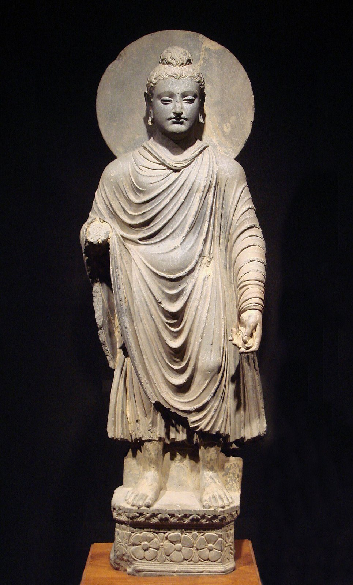

[9역02-01] 선사 문화 및 문명의 형성을 이해하고, 각 문명의 특징을 비교한다.
오늘의 질문농사는 인류에게 축복이었을까?
1도구로 본 시대
| 구석기 시대 | 신석기 시대 |
|---|
| 대표 도구 | 뗀석기 | 간석기, 토기 |
| 먹을거리 얻는 법 | 사냥, 채집 | 농경, 목축(사냥·채집도 함께) |
| 사는 방식 | 이동 생활, 동굴·막집 | 정착 생활, 움집·마을 |
2해석이 갈리는 유적
라스코 동굴 벽화를 그린 까닭에 대한 설명 두 가지: 사냥이 잘되기를 비는 주술, 신화나 이야기를 남긴 것
괴베클리 테페가 놀라운 까닭: 농사가 자리 잡기 전에 수렵·채집하던 사람들이 거대한 돌기둥을 세웠다.
3농사, 축복일까 짐일까
| 얻은 것 | 농사로 얻은 것은? 안정된 식량, 인구 증가, 정착과 마을, 저장 |
|---|
| 잃은 것 | 농사의 대가는? 더 긴 노동, 영양 부족과 충치, 모여 살며 늘어난 병, 남는 곡식을 둘러싼 불평등 |
|---|
많은 사람을 동원해야 만들 수 있는 청동기 시대의 무덤: 고인돌 → 지배하는 사람이 등장했다는 증거
4한 문장 쓰기
농사는 인류에게 이었다.
왜냐하면 .
[9역02-01] 선사 문화 및 문명의 형성을 이해하고, 각 문명의 특징을 비교한다.
오늘의 질문문명은 왜 강가에서 시작되었을까?
1네 문명 견주기
| 문명 | 강 | 남긴 것 | 문자 |
|---|
| 메소포타미아 | 티그리스·유프라테스강 | 지구라트, 함무라비 법전 | 쐐기 문자 |
| 이집트 | 나일강 | 피라미드 | 상형 문자 |
| 인더스 | 인더스강 | 계획 도시 모헨조다로 | 인더스 문자(해독 안 됨) |
| 중국 | 황허 | 갑골문, 청동기 | 갑골 문자 |
2사료 읽기 · 함무라비 법전
| 196조 | 귀족이 귀족의 눈을 상하게 하면 그의 눈을 상하게 한다. |
|---|
| 198조 | 귀족이 평민의 눈을 상하게 하면 은 1미나를 낸다. |
|---|
| 199조 | 귀족이 남의 노예의 눈을 상하게 하면 노예 값의 절반을 낸다. |
|---|
함무라비 법전(기원전 18세기) 조항을 쉽게 옮김.
세 조항을 견주면 알 수 있는 이 사회의 특징: 신분에 따라 같은 잘못의 벌이 달랐다(신분제 사회)
비석 맨 위에 신 앞에 선 왕을 새긴 까닭: 법이 신에게서 왔다고 보여 주어 왕의 권위를 높이려고
3피라미드를 쌓은 사람들
| 관점 1 | 헤로도토스와 영화 속 이야기는? 많은 사람이 노예처럼 강제로 일했다. |
|---|
| 관점 2 | 일꾼 마을 발굴로 나온 해석은? 나라가 불러 모은 농민과 숙련 일꾼이 교대로 일하며 빵과 맥주를 받았다. |
|---|
두 관점 가운데 내가 더 믿는 쪽과 그 근거: 예: 관점 2 — 발굴된 일꾼 마을과 무덤이라는 그때의 증거가 있다
4한 문장 쓰기
문명이 강가에서 시작된 까닭은 이다.
왜냐하면 .
[9역02-02] 서아시아⋅지중해 세계에서 등장한 여러 정치체를 비교하고 종교 및 문화를 탐구한다.
오늘의 질문큰 제국과 작은 도시, 어디가 살기 좋았을까?
1페르시아는 넓은 땅을 어떻게 다스렸나
지방에 둔 관리: 총독(사트라프) · 감시하러 보낸 사람: ‘왕의 눈’(감찰관) · 소식과 명령을 나른 길: 왕의 길(역참)
정복한 민족의 종교와 관습은 대체로 인정했다(관용).
2사료 비판 · 키루스 원통
| 누가 | 누가 만들었나? 바빌론을 정복한 페르시아 왕 키루스 2세 쪽 |
|---|
| 누구에게 | 누구에게 보여 주려 했나? 정복한 바빌론 사람들과 신들 — 새 왕이 정당하다고 |
|---|
| 사실·주장 | ‘최초의 인권 선언’이라는 평가를 어떻게 볼까? 관용 정책은 사실이었을 수 있지만, 정복을 정당화하는 왕의 선전 문서라는 성격도 크다. |
|---|
3아테네 민주주의
독재자가 될 사람의 이름을 도자기 조각에 써서 추방한 제도: 도편 추방제
민회에서 투표할 수 없던 사람들: 여성, 노예, 외국인
페르시아 전쟁의 이야기 대부분을 남긴 사람과 그 한계: 그리스인 헤로도토스 — 페르시아 쪽 시각이 빠져 있다
4한 문장 쓰기
내가 살고 싶은 나라는 이다.
왜냐하면 .
[9역02-02] 서아시아⋅지중해 세계에서 등장한 여러 정치체를 비교하고 종교 및 문화를 탐구한다.
오늘의 질문로마는 어떻게 그 넓은 땅을 오래 다스렸을까?
1로마를 묶은 것들
| 길 | 아피아 가도 같은 길은 무엇을 날랐나? 군대, 명령, 세금, 상품, 소식 |
|---|
| 물 | 퐁 뒤 가르 같은 수도교가 정복지 사람들에게 준 것은? 목욕탕·분수가 있는 로마식 도시 생활 → 로마를 받아들이게 함 |
|---|
| 시민권 | 212년 카라칼라 황제가 한 일은? 제국의 거의 모든 자유민에게 시민권을 주었다. |
|---|
2사료 비판 · 두 가지 기록
| 기록 | 누가 썼나 | 조심할 점 |
|---|
| 카라칼라가 세금 때문에 시민권을 주었다 | 원로원 의원 카시우스 디오 | 카라칼라를 싫어한 사람이었다. |
| 콘스탄티누스가 하늘에서 십자가를 보았다 | 주교 에우세비우스 | 교회 쪽 사람이 황제를 높이려고 썼을 수 있다. |
3크리스트교의 길
박해 → 313년 밀라노 칙령으로 공인 → 380년 국교
카타콤에 대한 흔한 이야기와 실제: 숨어 살던 곳이라는 이야기는 과장 — 주로 무덤이었다
서로마가 무너진 까닭으로 드는 설명 두 가지: 게르만족의 이동, 내분·경제 어려움·전염병
4한 문장 쓰기
로마가 오래 버틴 힘은 이었다.
왜냐하면 .
[9역02-03] 중국과 인도의 정치적 변화와 종교⋅사상 성립의 관계를 이해하고, 유라시아의 상호 교류를 탐색한다.
오늘의 질문어지러운 세상을 어떻게 바로잡을까?
1제자백가의 처방 · 도둑이 늘어난 마을
| 학파 | 핵심 생각 | 도둑 문제에 대한 처방 |
|---|
| 유가 | 인(어진 마음)과 예 | 지도자가 모범을 보이고 교육한다 |
| 법가 | 엄한 법과 상벌 | 벌을 엄하게 정하고 반드시 지킨다 |
| 도가 | 억지로 하지 않음, 자연스러움 | 욕심을 부추기는 것을 줄인다 |
| 묵가 | 차별 없는 사랑 | 서로 돕고 나눈다 |
2진의 통일
진 시황이 하나로 맞춘 것: 문자, 화폐, 도량형, 수레바퀴 폭
진이 고른 학파: 법가 → 진은 통일 후 15년 만에 무너졌다.
3사료 비판 · 분서갱유
| 누가 | 이 이야기를 주로 전한 책은? 한나라 사마천의 『사기』 |
|---|
| 조심할 점 | 왜 그대로 믿기 어려울까? 진을 무너뜨린 한나라 때 쓰여 진을 나쁘게 그릴 까닭이 있었다. 규모와 대상이 과장되었을 수 있다. |
|---|
4한 문장 쓰기
어지러운 세상을 바로잡는 길은 이다.
왜냐하면 .
[9역02-03] 중국과 인도의 정치적 변화와 종교⋅사상 성립의 관계를 이해하고, 유라시아의 상호 교류를 탐색한다.
오늘의 질문생각과 물건은 어떻게 먼 길을 건넜을까?
1인도의 신분과 종교
인도의 네 신분: 브라만 · 크샤트리아 · 바이샤 · 수드라
누구나 깨달음으로 괴로움에서 벗어날 수 있다고 가르친 종교: 불교(석가모니)
2사료 비판 · 아소카의 바위 칙문
| 13번 칙문 | 칼링가를 정복할 때 수많은 사람이 죽고 끌려갔다. 왕은 이를 깊이 뉘우치고, 이제 무력이 아니라 다르마(바른 법)에 따른 정복을 가장 귀하게 여긴다. |
|---|
아소카 왕(기원전 3세기)의 바위 칙문 내용을 요약해 옮김.
| 누가 | 이 글은 누가 새겼나? 아소카 왕 자신 |
|---|
| 사실·주장 | 이 글을 읽을 때 조심할 점은? 왕 스스로 새긴 글이라 반성이 진심이었는지, 다스리기 위한 선전이었는지 함께 생각해야 한다. |
|---|
3길 위의 교류

사진
간다라 불상 · 도쿄국립박물관 · 퍼블릭 도메인| 어디 | 간다라(오늘날 파키스탄 북부), 쿠샨 왕조 |
|---|
| 닮은 것 | 그리스 조각 — 곱슬머리, 깊은 옷 주름 |
|---|
| 까닭 | 알렉산드로스 원정 뒤 퍼진 헬레니즘 문화와 불교가 만났다 |
|---|
‘비단길’이라는 이름을 붙인 사람과 때: 독일 지리학자 리히트호펜, 1877년
4한 문장 쓰기
생각과 물건이 먼 길을 건넌 힘은 이었다.
왜냐하면 .